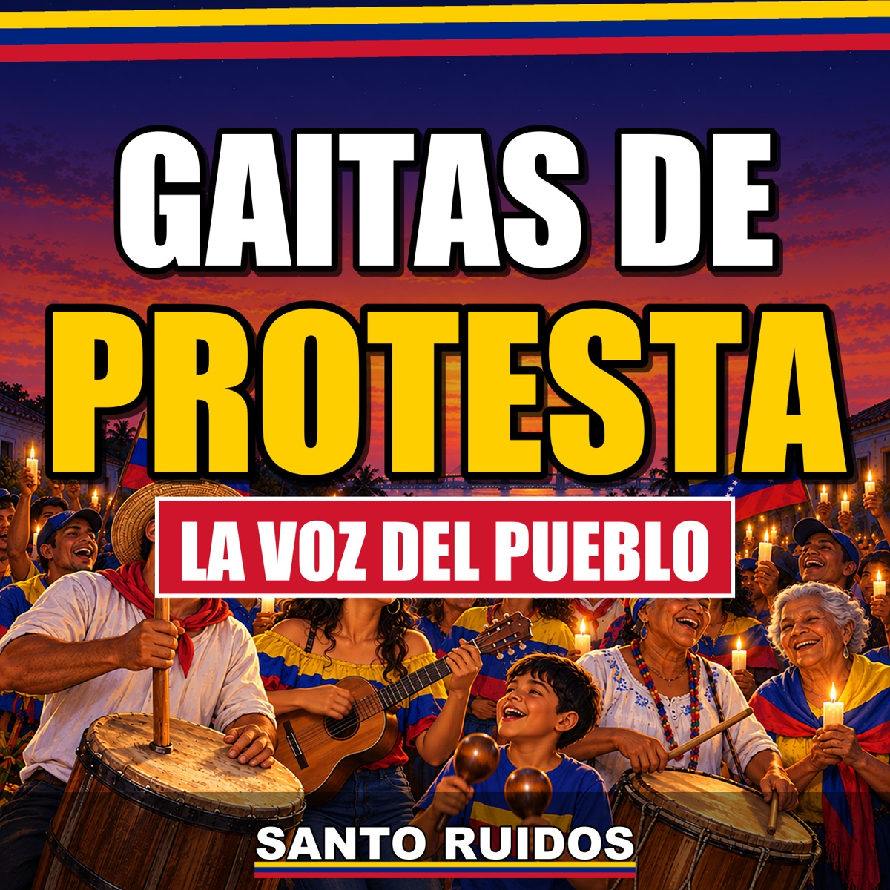

Santo Ruidos · La voz del pueblo hecha gaita
Todas nuestras gaitas completas y gratis en YouTube. Suscríbete y corre la voz: así llega la luz 💡
Suscríbete gratis en YouTube Canal de WhatsApp 🔔 Llega primero a Telegram
Todas nuestras gaitas completas y gratis en YouTube. Suscríbete y corre la voz: así llega la luz 💡
Suscríbete gratis en YouTube Canal de WhatsApp 🔔 Llega primero a Telegram